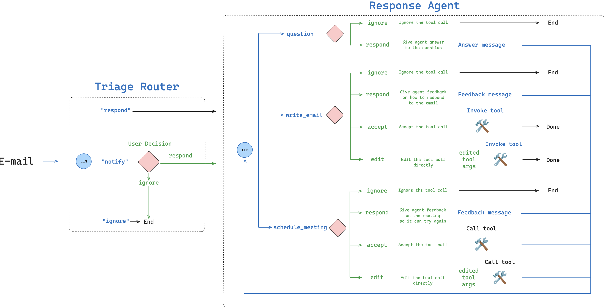

LangChain Interrupt Conference - Day 1
I had the privilege of attending LangChain’s first conference. The first day was a hands-on workshop going through the creation of an agent (an email assistant) from scratch. It went through many of the components of building an agent:
- Overview of LangGraph
- Writing the Agent
- Evaluation / Testing
- Human Feedback
- Memory

Code
- Python: https://github.com/langchain-ai/agents-from-scratch
- Typescript: https://github.com/langchain-ai/agents-from-scratch-ts (this is the first time I’ve seen Typescript Jupyter notebooks)
Notebook 1: LangGraph 101
Notebook: langgraph_101.ipynb
Lance Martin gave an overview of LangGraph that was largely review. It was a good reminder that “tool calling is just structured output.”
LangGraph code to create the agent:
from typing import Literal
from langgraph.graph import MessagesState
from email_assistant.utils import show_graph
def call_llm(state: MessagesState) -> MessagesState:
"""Run LLM"""
output = model_with_tools.invoke(state["messages"])
return {"messages": [output]}
# actually what happens when a tool call is made
def run_tool(state: MessagesState):
"""Performs the tool call"""
result = []
for tool_call in state["messages"][-1].tool_calls:
observation = write_email.invoke(tool_call["args"])
result.append({"role": "tool", "content": observation, "tool_call_id": tool_call["id"]})
return {"messages": result}
def should_continue(state: MessagesState) -> Literal["run_tool", END]:
"""Route to tool handler, or end if Done tool called"""
# Get the last message
messages = state["messages"]
last_message = messages[-1]
# If the last message is a tool call, check if it's a Done tool call
if last_message.tool_calls:
return "run_tool"
# Otherwise, we stop (reply to the user)
return END
workflow = StateGraph(MessagesState)
workflow.add_node("call_llm", call_llm)
workflow.add_node("run_tool", run_tool)
workflow.add_edge(START, "call_llm")
workflow.add_conditional_edges("call_llm", should_continue, {"run_tool": "run_tool", END: END})
workflow.add_edge("run_tool", END)
# Run the workflow
app = workflow.compile()Notebook 2: Building the Agent
Notebook: agent.ipynb
Example Code for the Router in LangGraph
Commanddoes control flow AND state up dates in one- In the example below:
return Command(goto=goto, update=update)
class RouterSchema(BaseModel):
"""Analyze the unread email and route it according to its content."""
reasoning: str = Field(
description="Step-by-step reasoning behind the classification."
)
classification: Literal["ignore", "respond", "notify"] = Field(
description="The classification of an email: 'ignore' for irrelevant emails, "
"'notify' for important information that doesn't need a response, "
"'respond' for emails that need a reply",
)
# Initialize the LLM for use with router / structured output
llm = init_chat_model("openai:gpt-4.1", temperature=0.0)
llm_router = llm.with_structured_output(RouterSchema)
def triage_router(state: State) -> Command[Literal["response_agent", END]]:
"""Analyze email content to decide if we should respond, notify, or ignore."""
author, to, subject, email_thread = parse_email(state["email_input"])
system_prompt = triage_system_prompt.format(
background=default_background,
triage_instructions=default_triage_instructions
)
user_prompt = triage_user_prompt.format(
author=author, to=to, subject=subject, email_thread=email_thread
)
result = llm_router.invoke(
[
{"role": "system", "content": system_prompt},
{"role": "user", "content": user_prompt},
]
)
if result.classification == "respond":
print("📧 Classification: RESPOND - This email requires a response")
goto = "response_agent"
update = {
"messages": [
{
"role": "user",
"content": f"Respond to the email: \n\n{format_email_markdown(subject, author, to, email_thread)}",
}
],
"classification_decision": result.classification,
}
elif result.classification == "ignore":
print("🚫 Classification: IGNORE - This email can be safely ignored")
goto = END
update = {
"classification_decision": result.classification,
}
elif result.classification == "notify":
print("🔔 Classification: NOTIFY - This email contains important information")
# For now, we go to END. But we will add to this later!
goto = END
update = {
"classification_decision": result.classification,
}
else:
raise ValueError(f"Invalid classification: {result.classification}")
return Command(goto=goto, update=update)You can add agents in nodes in LangGraph:
- xray show true shows it
- If a LangGraph agent is deployed in LangGraph platform, I think I can also use this as a Remote Graph
Notebook 3: Evaluating the Agent
Notebook: evaluation
- When thinking of evaluations, if an expected input does not have a static expected output, you can define “Response Criteria” which a LLM as Judge could take in.
- Below is an example with “Response Criteria”
/Users/lawrence.wu/github/agents-from-scratch
Email Input: {'author': 'Alice Smith <alice.smith@company.com>', 'to': 'Lance Martin <lance@company.com>', 'subject': 'Quick question about API documentation', 'email_thread': "Hi Lance,\n\nI was reviewing the API documentation for the new authentication service and noticed a few endpoints seem to be missing from the specs. Could you help clarify if this was intentional or if we should update the docs?\n\nSpecifically, I'm looking at:\n- /auth/refresh\n- /auth/validate\n\nThanks!\nAlice"}
Expected Triage Output: respond
Expected Tool Calls: ['write_email', 'done']
Response Criteria:
• Send email with write_email tool call to acknowledge the question and confirm it will be investigated all_messages_str = format_messages_string(response['messages'])
eval_result = criteria_eval_structured_llm.invoke([
{"role": "system",
"content": RESPONSE_CRITERIA_SYSTEM_PROMPT},
{"role": "user",
"content": f"""\n\n Response criteria: {success_criteria} \n\n Assistant's response: \n\n {all_messages_str} \n\n Evaluate whether the assistant's response meets the criteria and provide justification for your evaluation."""}
])
eval_resultnew interrupt node
def triage_interrupt_handler(state: State) -> Command[Literal["response_agent", "__end__"]]:
"""Handles interrupts from the triage step."""
# Parse the email input
author, to, subject, email_thread = parse_email(state["email_input"])
# Create email markdown for Agent Inbox in case of notification
email_markdown = format_email_markdown(subject, author, to, email_thread)
# Create messages
messages = [{"role": "user",
"content": f"Email to notify user about: {email_markdown}"
}]
# Create interrupt that is shown to the user
# This request schema is what Agent Inbox expects
request = {
"action_request": {
"action": f"Email Assistant: {state['classification_decision']}",
"args": {}
},
"config": {
"allow_ignore": True,
"allow_respond": True,
"allow_edit": False,
"allow_accept": False,
},
# Email to show in Agent Inbox
"description": email_markdown,
}
# Agent Inbox responds with a list of dicts with a single key `type` that can be `accept`, `edit`, `ignore`, or `response`.
response = interrupt([request])[0]
# If user provides feedback, go to response agent and use feedback to respond to email
if response["type"] == "response":
# Add feedback to messages
user_input = response["args"]
# Used by the response agent
messages.append({"role": "user",
"content": f"User wants to reply to the email. Use this feedback to respond: {user_input}"
})
# Go to response agent
goto = "response_agent"
# If user ignores email, go to END
elif response["type"] == "ignore":
goto = END
# Catch all other responses
else:
raise ValueError(f"Invalid response: {response}")
# Update the state
update = {
"messages": messages,
}
return Command(goto=goto, update=update)Actually thinking through all of the different use cases and how it affects the workflow of the agent is important. Pretty complicated even just for a simple email assistant.

Interrupt handler, define the config for each node
def interrupt_handler(state: State) -> Command[Literal["llm_call", "__end__"]]:
"""Creates an interrupt for human review of tool calls"""
# Store messages
result = []
# Go to the LLM call node next
goto = "llm_call"
# Iterate over the tool calls in the last message
for tool_call in state["messages"][-1].tool_calls:
# Allowed tools for HITL
hitl_tools = ["write_email", "schedule_meeting", "Question"]
# If tool is not in our HITL list, execute it directly without interruption
if tool_call["name"] not in hitl_tools:
# Execute search_memory and other tools without interruption
tool = tools_by_name[tool_call["name"]]
observation = tool.invoke(tool_call["args"])
result.append({"role": "tool", "content": observation, "tool_call_id": tool_call["id"]})
continue
# Get original email from email_input in state
email_input = state["email_input"]
author, to, subject, email_thread = parse_email(email_input)
original_email_markdown = format_email_markdown(subject, author, to, email_thread)
# Format tool call for display and prepend the original email
tool_display = format_for_display(state, tool_call)
description = original_email_markdown + tool_display
# Configure what actions are allowed in Agent Inbox
if tool_call["name"] == "write_email":
config = {
"allow_ignore": True,
"allow_respond": True,
"allow_edit": True,
"allow_accept": True,
}
elif tool_call["name"] == "schedule_meeting":
config = {
"allow_ignore": True,
"allow_respond": True,
"allow_edit": True,
"allow_accept": True,
}
elif tool_call["name"] == "Question":
config = {
"allow_ignore": True,
"allow_respond": True,
"allow_edit": False,
"allow_accept": False,
}
else:
raise ValueError(f"Invalid tool call: {tool_call['name']}")
# Create the interrupt request
request = {
"action_request": {
"action": tool_call["name"],
"args": tool_call["args"]
},
"config": config,
"description": description,
}
# Send to Agent Inbox and wait for response
response = interrupt([request])[0]
# Handle the responses
if response["type"] == "accept":
# Execute the tool with original args
tool = tools_by_name[tool_call["name"]]
observation = tool.invoke(tool_call["args"])
result.append({"role": "tool", "content": observation, "tool_call_id": tool_call["id"]})
elif response["type"] == "edit":
# Tool selection
tool = tools_by_name[tool_call["name"]]
# Get edited args from Agent Inbox
edited_args = response["args"]["args"]
# Update the AI message's tool call with edited content (reference to the message in the state)
ai_message = state["messages"][-1] # Get the most recent message from the state
current_id = tool_call["id"] # Store the ID of the tool call being edited
# Create a new list of tool calls by filtering out the one being edited and adding the updated version
# This avoids modifying the original list directly (immutable approach)
updated_tool_calls = [tc for tc in ai_message.tool_calls if tc["id"] != current_id] + [
{"type": "tool_call", "name": tool_call["name"], "args": edited_args, "id": current_id}
]
# Create a new copy of the message with updated tool calls rather than modifying the original
# This ensures state immutability and prevents side effects in other parts of the code
result.append(ai_message.model_copy(update={"tool_calls": updated_tool_calls}))
# Update the write_email tool call with the edited content from Agent Inbox
if tool_call["name"] == "write_email":
# Execute the tool with edited args
observation = tool.invoke(edited_args)
# Add only the tool response message
result.append({"role": "tool", "content": observation, "tool_call_id": current_id})
# Update the schedule_meeting tool call with the edited content from Agent Inbox
elif tool_call["name"] == "schedule_meeting":
# Execute the tool with edited args
observation = tool.invoke(edited_args)
# Add only the tool response message
result.append({"role": "tool", "content": observation, "tool_call_id": current_id})
# Catch all other tool calls
else:
raise ValueError(f"Invalid tool call: {tool_call['name']}")
elif response["type"] == "ignore":
if tool_call["name"] == "write_email":
# Don't execute the tool, and tell the agent how to proceed
result.append({"role": "tool", "content": "User ignored this email draft. Ignore this email and end the workflow.", "tool_call_id": tool_call["id"]})
# Go to END
goto = END
elif tool_call["name"] == "schedule_meeting":
# Don't execute the tool, and tell the agent how to proceed
result.append({"role": "tool", "content": "User ignored this calendar meeting draft. Ignore this email and end the workflow.", "tool_call_id": tool_call["id"]})
# Go to END
goto = END
elif tool_call["name"] == "Question":
# Don't execute the tool, and tell the agent how to proceed
result.append({"role": "tool", "content": "User ignored this question. Ignore this email and end the workflow.", "tool_call_id": tool_call["id"]})
# Go to END
goto = END
else:
raise ValueError(f"Invalid tool call: {tool_call['name']}")
elif response["type"] == "response":
# User provided feedback
user_feedback = response["args"]
if tool_call["name"] == "write_email":
# Don't execute the tool, and add a message with the user feedback to incorporate into the email
result.append({"role": "tool", "content": f"User gave feedback, which can we incorporate into the email. Feedback: {user_feedback}", "tool_call_id": tool_call["id"]})
elif tool_call["name"] == "schedule_meeting":
# Don't execute the tool, and add a message with the user feedback to incorporate into the email
result.append({"role": "tool", "content": f"User gave feedback, which can we incorporate into the meeting request. Feedback: {user_feedback}", "tool_call_id": tool_call["id"]})
elif tool_call["name"] == "Question":
# Don't execute the tool, and add a message with the user feedback to incorporate into the email
result.append({"role": "tool", "content": f"User answered the question, which can we can use for any follow up actions. Feedback: {user_feedback}", "tool_call_id": tool_call["id"]})
else:
raise ValueError(f"Invalid tool call: {tool_call['name']}")
# Catch all other responses
else:
raise ValueError(f"Invalid response: {response}")
# Update the state
update = {
"messages": result,
}
return Command(goto=goto, update=update)Then the graph looks like this now:
from email_assistant.utils import show_graph
# Conditional edge function
def should_continue(state: State) -> Literal["interrupt_handler", END]:
"""Route to tool handler, or end if Done tool called"""
messages = state["messages"]
last_message = messages[-1]
if last_message.tool_calls:
for tool_call in last_message.tool_calls:
if tool_call["name"] == "Done":
return END
else:
return "interrupt_handler"
# Build workflow
agent_builder = StateGraph(State)
# Add nodes
agent_builder.add_node("llm_call", llm_call)
agent_builder.add_node("interrupt_handler", interrupt_handler)
# Add edges
agent_builder.add_edge(START, "llm_call")
agent_builder.add_conditional_edges(
"llm_call",
should_continue,
{
"interrupt_handler": "interrupt_handler",
END: END,
},
)
# Compile the agent
response_agent = agent_builder.compile()
# Build overall workflow
overall_workflow = (
StateGraph(State, input=StateInput)
.add_node(triage_router)
.add_node(triage_interrupt_handler)
.add_node("response_agent", response_agent)
.add_edge(START, "triage_router")
)
email_assistant = overall_workflow.compile()
show_graph(email_assistant, xray=True)Notebook 4: Human-in-the-loop
Notebook: hitl.ipynb
This was a very interesting demo showcasing how a LangGraph agent that has an interrupt, can send that interrupt to a UI, in this case Agent Inbox. A human can give that feedback in the Agent Inbox UI and the LangGraph graph will take that feedback and continue processing.
Notebook 5: Memory
Notebook: memory.ipynb
Update memory instructions - some of this was taken from the gpt-4.1 prompting guide
MEMORY_UPDATE_INSTRUCTIONS = """
# Role and Objective
You are a memory profile manager for an email assistant agent that selectively updates user preferences based on feedback messages from human-in-the-loop interactions with the email assistant.
# Instructions
- NEVER overwrite the entire memory profile
- ONLY make targeted additions of new information
- ONLY update specific facts that are directly contradicted by feedback messages
- PRESERVE all other existing information in the profile
- Format the profile consistently with the original style
- Generate the profile as a string
# Reasoning Steps
1. Analyze the current memory profile structure and content
2. Review feedback messages from human-in-the-loop interactions
3. Extract relevant user preferences from these feedback messages (such as edits to emails/calendar invites, explicit feedback on assistant performance, user decisions to ignore certain emails)
4. Compare new information against existing profile
5. Identify only specific facts to add or update
6. Preserve all other existing information
7. Output the complete updated profile
# Example
<memory_profile>
RESPOND:
- wife
- specific questions
- system admin notifications
NOTIFY:
- meeting invites
IGNORE:
- marketing emails
- company-wide announcements
- messages meant for other teams
</memory_profile>
<user_messages>
"The assistant shouldn't have responded to that system admin notification."
</user_messages>
<updated_profile>
RESPOND:
- wife
- specific questions
NOTIFY:
- meeting invites
- system admin notifications
IGNORE:
- marketing emails
- company-wide announcements
- messages meant for other teams
</updated_profile>
# Process current profile for {namespace}
<memory_profile>
{current_profile}
</memory_profile>
Think step by step about what specific feedback is being provided and what specific information should be added or updated in the profile while preserving everything else."""
MEMORY_UPDATE_INSTRUCTIONS_REINFORCEMENT = """
Remember:
- NEVER overwrite the entire profile
- ONLY make targeted additions or changes based on explicit feedback
- PRESERVE all existing information not directly contradicted
- Output the complete updated profile as a string
"""Update Memory function, notably - this uses structured output to do the updating
class UserPreferences(BaseModel):
"""User preferences."""
preferences: str
justification: str
def update_memory(store, namespace, messages):
"""Update memory profile in the store.
Args:
store: LangGraph BaseStore instance to update memory
namespace: Tuple defining the memory namespace, e.g. ("email_assistant", "triage_preferences")
messages: List of messages to update the memory with
"""
# Get the existing memory
user_preferences = store.get(namespace, "user_preferences")
# Update the memory
llm = init_chat_model("openai:gpt-4.1", temperature=0.0).with_structured_output(UserPreferences)
result = llm.invoke(
[
{"role": "system", "content": MEMORY_UPDATE_INSTRUCTIONS.format(current_profile=user_preferences.value, namespace=namespace)},
{"role": "user", "content": f"Think carefully and update the memory profile based upon these user messages:"}
] + messages
)
# Save the updated memory to the store
store.put(namespace, "user_preferences", result.preferences)The triage function needs to be updated according to WHEN to update the user preferences
- Gave feedback to reply to this email –> update the preferences accordingly
- Ignore email even when it was classified as notify –> update the preferences accordingly
- If the user edits the email written by the AI –> update the writing email preferences